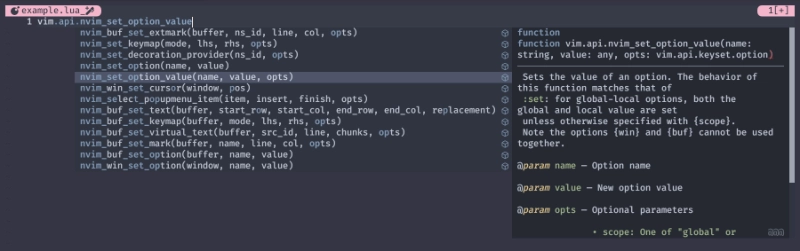
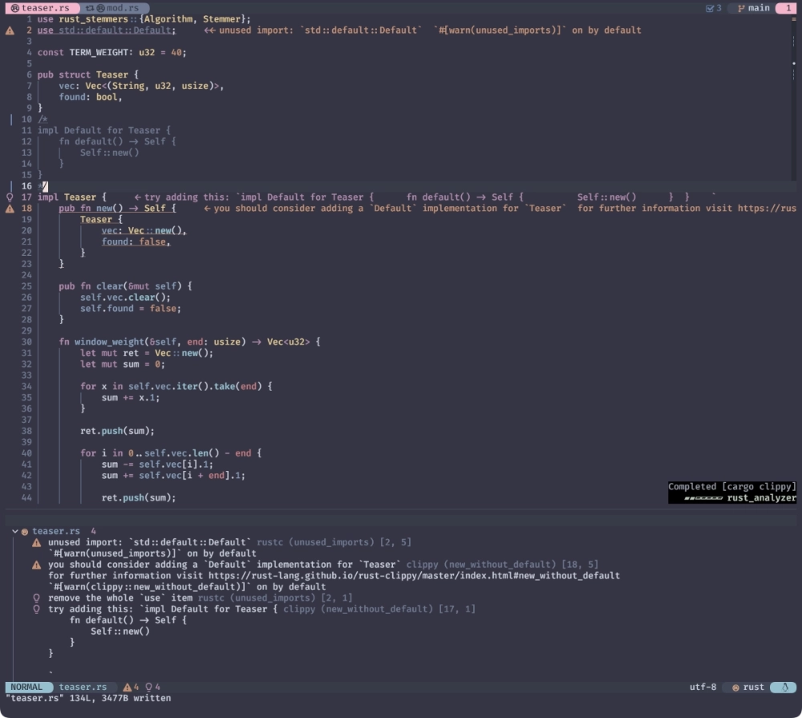
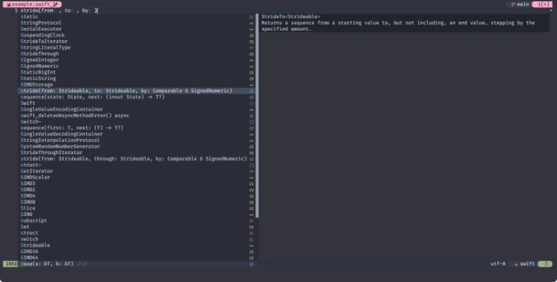
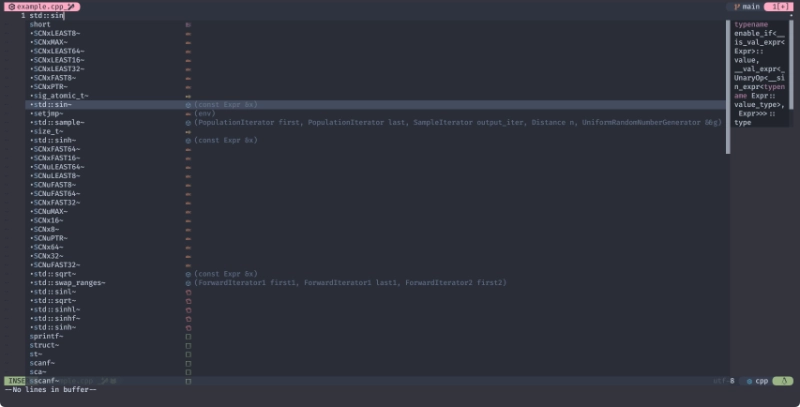
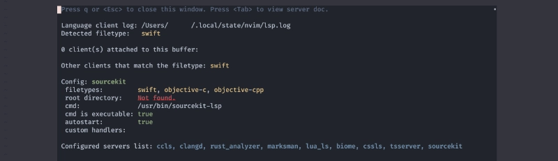
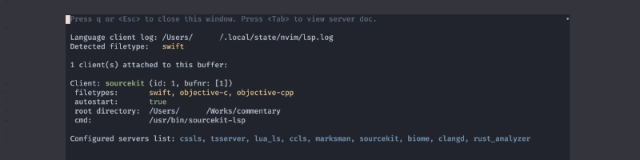

🍑 LSP (Meet Me)
このサイトを見たな❗これでお前とも縁ができた❗
個人でやってる趣味 (暇つぶしとも言う😅) にしては、なかなか身に余る光栄です。
やあ やあ やあ！
祭りだ 祭りだ！
舟を出せ❗いざ鬼退治❗❗
☕ Previously
ちょっとだけ むか〜し、むかしのおさらい。
require('mason').setup {
ui = {
check_outdated_packages_on_open = false,
border = 'single',
},
}
require('mason-lspconfig').setup()
固有の設定を必要としなければ、
これだけでmason.nvimでインストールしたLSPは全てカバーできていましたね😆
このサイトではpackerと外観の統一感を持たせる目的でmasonにborderを入れていました。
lazyを使う場合、これはもう無いほうが統一感が出ていいかも〜😪
require('mason').setup {
ui = {
check_outdated_packages_on_open = false,
- border = 'single',
},
}
袖振り合うも他生の縁！
躓く石も縁の端くれ！
🧠 Additional Setup
ここから一歩進めて、「固有の設定を入れてみよう」というのがこの節のおはなしです。
このページは 2025/05/08 に、以下の環境にあわせてサンプルコードを書き直しています。
:h mason-lspconfig-requirements
- neovim >= 0.11.0
- mason.nvim >= 2.0.0
- nvim-lspconfig >= 2.0.0
諸々、細かいところまで把握しきれていないのは許して😘
共に踊れば繋がる縁！
この世は楽園！
🕶️ runtimepath
そういえば、あるところにruntimepathというものがおりました。
'runtimepath' 'rtp' vimfiles
'runtimepath' 'rtp' string (default "$XDG_CONFIG_HOME/nvim,
$XDG_CONFIG_DIRS[1]/nvim,
$XDG_CONFIG_DIRS[2]/nvim,
…
$XDG_DATA_HOME/nvim[-data]/site,
$XDG_DATA_DIRS[1]/nvim/site,
$XDG_DATA_DIRS[2]/nvim/site,
…
$VIMRUNTIME,
…
$XDG_DATA_DIRS[2]/nvim/site/after,
$XDG_DATA_DIRS[1]/nvim/site/after,
$XDG_DATA_HOME/nvim[-data]/site/after,
…
$XDG_CONFIG_DIRS[2]/nvim/after,
$XDG_CONFIG_DIRS[1]/nvim/after,
$XDG_CONFIG_HOME/nvim/after")
global
List of directories to be searched for these runtime files:
filetype.lua filetypes |new-filetype|
autoload/ automatically loaded scripts |autoload-functions|
colors/ color scheme files |:colorscheme|
compiler/ compiler files |:compiler|
doc/ documentation |write-local-help|
ftplugin/ filetype plugins |write-filetype-plugin|
indent/ indent scripts |indent-expression|
keymap/ key mapping files |mbyte-keymap|
lang/ menu translations |:menutrans|
lsp/ LSP client configurations |lsp-config|
lua/ |Lua| plugins
menu.vim GUI menus |menu.vim|
pack/ packages |:packadd|
parser/ |treesitter| syntax parsers
plugin/ plugin scripts |write-plugin|
queries/ |treesitter| queries
rplugin/ |remote-plugin| scripts
spell/ spell checking files |spell|
syntax/ syntax files |mysyntaxfile|
tutor/ tutorial files |:Tutor|
And any other file searched for with the |:runtime| command.
大きなリストが どんぶらこ〜 どんぶらこ〜 と流れてきましたが、とりあえずここでの おはなし は
"プラグイン設定はluaに、LSPクライアント設定はlspに行きました。" ということだけです👵
...いや、"行くべきです" と言うべきか👴
だからもし、こんな感じになってるとしたら...
.
├── init.lua
├── lazy-lock.json
├── lua
│ ├── extensions
│ │ ├── ...
│ ├── ...
│
└── snippets
├── ...
トップディレクトリ (.config/nvim) でこんなんしましょう🐱
mkdir lsp
そしたらこんなんなりますね🌳
.
├── init.lua
├── lazy-lock.json
+├── lsp
├── lua
│ ├── extensions
│ │ ├── ...
│ ├── ...
│
└── snippets
├── ...
この節で示すコードは、このlspディレクトリにファイルを新規で作成していきます。
先に示したほうがイメージがつくと思うので出しちゃいますが、最終的にはこんな形になります🌳🌳🌳
.
├── init.lua
├── lazy-lock.json
+├── lsp
+│ ├── ccls.lua
+│ ├── lua_ls.lua
+│ ├── rust_analyzer.lua
+│ └── sourcekit.lua
├── lua
│ ├── extensions
│ │ ├── ...
│ ├── ...
│
└── snippets
├── ...
当然ながら、これらを実際にインストールするかどうかはおまかせします😆
悩みなんざ吹っ飛ばせ！
笑え 笑え！
🐵 lua_ls (Lua)
探してた この心うっきうき暴れさせて
The Lua language server provides various language features for Lua to make development easier and faster. With nearly a million installs in Visual Studio Code, it is the most popular extension for Lua language support.
Lua 言語サーバーは、Lua の様々な言語機能を提供し、開発をより簡単かつ高速にします。 Visual Studio Code に 100万近くインストールされており、Lua 言語をサポートする最も人気のある拡張機能です。
100万とか言わないでください。1Kが霞むんで🤣
わたしはだいぶ長〜い間気づきませんでしたが、
nvim-lspconfigのlua_lsを参考にして、
以下のようにしてみると...。
vim.lsp.config('lua_ls', {
on_init = function(client)
if client.workspace_folders then
local path = client.workspace_folders[1].name
if
path ~= vim.fn.stdpath('config')
and (vim.uv.fs_stat(path .. '/.luarc.json') or vim.uv.fs_stat(path .. '/.luarc.jsonc'))
then
return
end
end
client.config.settings.Lua = vim.tbl_deep_extend('force', client.config.settings.Lua, {
runtime = {
-- Tell the language server which version of Lua you're using (most
-- likely LuaJIT in the case of Neovim)
version = 'LuaJIT',
-- Tell the language server how to find Lua modules same way as Neovim
-- (see `:h lua-module-load`)
path = {
'lua/?.lua',
'lua/?/init.lua',
},
},
-- Make the server aware of Neovim runtime files
workspace = {
checkThirdParty = false,
library = {
vim.env.VIMRUNTIME
-- Depending on the usage, you might want to add additional paths
-- here.
-- '${3rd}/luv/library'
-- '${3rd}/busted/library'
}
}
})
end,
settings = {
Lua = {}
}
})
こうするとNeovim固有のAPIがlua_lsを通して補完候補に現れます😉

fidget.nvimを使用しているのであれば、ここでもパワーが溜まってきただろう❗❗

Neovimを使う場合はこれを置いておくと楽しいです🤗
🐶 rust-analyzer (Rust)
冒険はいつだってワンだふる
rust-analyzer is a modular compiler frontend for the Rust language. It is a part of a larger rls-2.0 effort to create excellent IDE support for Rust.
rust-analyzer は、Rust 言語用のモジュラー・コンパイラ・フロントエンドです。 Rust の優れた IDE サポートを作成するための、より大きな rls-2.0 の取り組みの一部です。
と、いうことでRustにはこれがいいんじゃないかと思うんだけど、
どこを見て持ってきたのかが思い出せなくて見つからない...😑
vim.lsp.config('rust_analyzer', {
settings = {
['rust-analyzer'] = {
diagnostic = { enable = false },
assist = { importGranularity = 'module', importPrefix = 'self' },
cargo = { allFeatures = true, loadOutDirsFromCheck = true },
procMacro = { enable = true },
},
},
})
🐦 Clippy
繋がってく縁と縁 出会いは少しトリッキー
A collection of lints to catch common mistakes and improve your Rust code.
There are over 700 lints included in this crate!
Lints are divided into categories, each with a default lint level.
You can choose how much Clippy is supposed to annoy help you by changing the lint level by category
よくあるミスを発見し、あなたのRustコードを改善するための lint のコレクションです。
この crate には 700以上のリントが含まれています！
Lints はカテゴリに分かれており、
それぞれデフォルトのlint level を持っています。
カテゴリごとに lint level を変更することで、Clippy がどの程度あなたを 迷惑 手助けするかを選択できます。
これはちょっと確認してないんですが、
Clippyはmason.nvimからは入らないんじゃないかな❓
Rustの環境を入れると、たぶん自然にインストールされてるやつです。
vim.lsp.config('rust_analyzer', {
settings = {
['rust-analyzer'] = {
diagnostic = { enable = false },
assist = { importGranularity = 'module', importPrefix = 'self' },
cargo = { allFeatures = true, loadOutDirsFromCheck = true },
procMacro = { enable = true },
+ checkOnSave = { enable = true },
+ command = { 'clippy' },
},
},
})

こんな感じで、rustcに混じってclippyも怒るようになります😱
👹 If mason is not available
打ち解けりゃ鬼も笑う
普段使っている言語によってはmason.nvimにないLSPを使用したいこともあると思うんですが、
まあ大抵はなんとかなります😗
さっき流れてきたリストの中に
plugin/ plugin scripts |write-plugin|
というものがありました。これを割って食べましょう🍑
同じ要領で、トップにpluginディレクトリと、その中にlsp-manual.luaを作成します。
.
├── init.lua
├── lazy-lock.json
├── lsp
│ ├── ccls.lua
│ ├── lua_ls.lua
│ ├── rust_analyzer.lua
│ └── sourcekit.lua
├── lua
│ ├── extensions
│ │ ├── ...
│ ├── ...
│
+├── plugin
+│ └── lsp-manual.lua
└── snippets
├── ...
こうしておくと、lsp-manual.luaが自動的に読み込まれて、mason.nvim管理下にいないlspを有効化できます。
...と、いうことで 私が使っている (入っているだけとも言う😅) lspを例にして おみこし は続きます 🐦🔥
🐲 SourceKit-LSP (Swift)
見える景色がちょっとずつ違う
SourceKit-LSP is an implementation of the Language Server Protocol (LSP) for Swift and C-based languages. It provides features like code-completion and jump-to-definition to editors that support LSP. SourceKit-LSP is built on top of sourcekitd and clangd for high-fidelity language support, and provides a powerful source code index as well as cross-language support. SourceKit-LSP supports projects that use the Swift Package Manager.
SourceKit-LSP は、Swift と C ベースの言語のための Language Server Protocol(LSP) の実装です。 LSP をサポートするエディタにコード補完や定義へのジャンプなどの機能を提供します。 SourceKit-LSP は、sourcekitdとclangdの上に構築され、忠実度の高い言語サポートを実現し、 強力なソースコードインデックスとクロスランゲージのサポートを提供します。 SourceKit-LSP は Swift Package Manager を使用するプロジェクトをサポートします。
macOSでXcodeをインストールしている環境であれば、これも自然に入ってます。
vim.lsp.config('sourcekit', {
filetypes = { 'swift', 'objective-c', 'objective-cpp' },
})

だいぶ古いスクリーンショットだからなんか妙に余裕ないけど許して (その一) 😅
🐯 ccls (C/C++)
みなさまのお手を拝借
これはbrewとかaptとか使えばお手軽にインストールできますね😉
vim.lsp.config('ccls', {
init_options = {
compilationDatabaseDirectory = 'build',
index = {
threads = 0,
},
clang = {
extraArgs = { '--std=c++20' },
excludeArgs = { '-frounding-math' },
},
},
})

だいぶ古いスクリーンショットだからなんか妙に余裕ないけど許して (その二) 😅
🦈 Root Directory
ちなみになんですが...。
毎度のことながら、なんかじょーずにいかないなーと思ったらLspInfoを確認してみましょう。

...もしroot directoryがNot found.(認識されていない状態) だと、
それは "履 い て な い" らしいんです、PAAAANTS!! 🤷♀️

だいぶ古いスクリーンショットだからなんか妙に余裕ないけど許して(その三) 😅
🍑 Don't Boo! ドンブラザーズ
さて "立春 🌸" の前に "節分 🫘" です。色々仕切り直していきましょう❗
豆をまいて...、年の数だけ数えながら豆を食べて...。
そのあとはノーカウントで食べ放題だ😆
どこの家でもそうだろう❓😏
...違うの⁉️
じか〜い、じかい。
なに？ 王様戦xxxxングオージャーが最終回？？
だったら俺たちも最終回だ。MVP を決めてやる。
🐶 🐲 👹
さようなら、ドンブラザーズ ❗
MVP とは、俺のことだ！！
17.7話 「フィナーレいさみあし 」という おはなし。